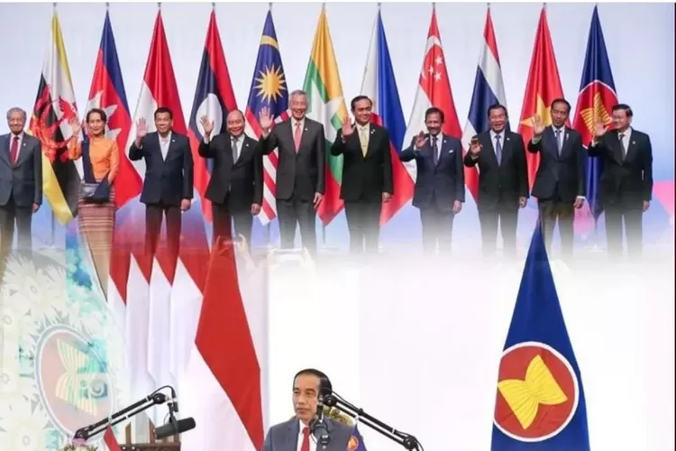
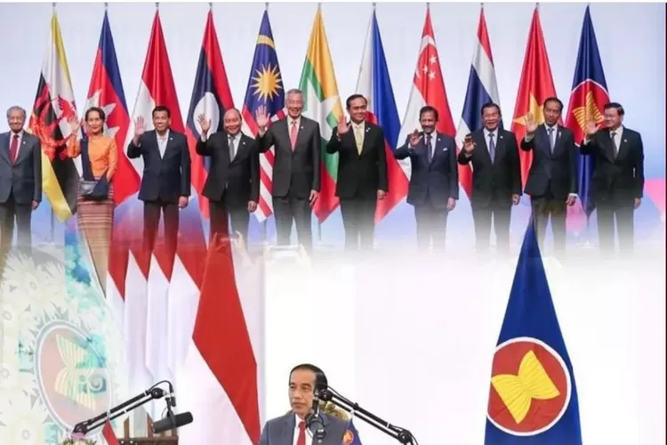

Indonesia memiliki peran kunci dalam meningkatkan kerja sama perdagangan di kawasan ASEAN. Sebagai negara dengan ekonomi terbesar di Asia Tenggara, Indonesia sering menjadi penggerak utama dalam berbagai inisiatif ekonomi. Indonesia berusaha memperkuat hubungan dagang dengan Singapura dan Malaysia, terutama dalam sektor energi dan manufaktur. Misalnya, Indonesia menyediakan berbagai bahan baku untuk industri di Malaysia, sementara Singapura menjadi pasar utama untuk produk-produk Indonesia. Selain itu, Indonesia juga aktif dalam mengembangkan sektor industri dan pertanian dengan Thailand dan Vietnam. Dengan berfokus pada pengembangan teknologi, infrastruktur, dan industri pertanian, Indonesia mendukung kedua negara ini untuk meningkatkan kapasitas produksi dan ekspor. Melalui ASEAN Economic Community (AEC), Indonesia memainkan peran penting dalam mendorong integrasi ekonomi di kawasan. Indonesia mendorong negara-negara ASEAN untuk saling membuka pasar, mengurangi hambatan perdagangan, dan meningkatkan investasi. Kerja sama ini tidak hanya bermanfaat untuk Indonesia, tetapi juga membantu negara-negara tetangga untuk berkembang lebih pesat, terutama di sektor manufaktur dan perdagangan. Melalui AEC, Indonesia berharap dapat menciptakan kawasan yang lebih terhubung, menguntungkan, dan lebih siap menghadapi tantangan ekonomi global. Dengan peran aktif ini, Indonesia tidak hanya menguntungkan dirinya sendiri, tetapi juga turut mendorong pertumbuhan ekonomi di seluruh kawasan Asia Tenggara.
Singapura, Malaysia, Thailand, dan Vietnam adalah negara-negara yang memiliki hubungan ekonomi yang erat dengan Indonesia. Singapura adalah salah satu mitra dagang utama Indonesia dalam sektor perdagangan dan jasa. Negara ini juga merupakan pusat keuangan di Asia, yang memberikan peluang besar bagi Indonesia dalam hal investasi. Malaysia, yang berbatasan langsung dengan Indonesia, memiliki banyak sektor yang saling melengkapi, seperti energi dan manufaktur, sehingga kerja sama ekonomi antara kedua negara sangat penting untuk kesejahteraan bersama. Thailand dan Vietnam, meskipun memiliki perekonomian yang lebih kecil, memiliki sektor industri dan pertanian yang berkembang, yang menjadikan mereka mitra yang penting bagi Indonesia dalam meningkatkan sektor produksi dan ekspor. Keempat negara ini memiliki banyak potensi dalam meningkatkan perdagangan dan investasi antarnegara, baik dalam sektor manufaktur, energi, atau pertanian. Singapura memberikan dukungan dalam pengembangan sektor jasa, seperti teknologi dan keuangan, yang dapat membantu Indonesia mempercepat transformasi digital dan ekonomi berbasis teknologi. Malaysia memiliki pengalaman dalam sektor minyak dan gas serta manufaktur, yang sangat relevan bagi Indonesia yang memiliki potensi besar dalam sektor ini. Thailand dan Vietnam, dengan sektor industri dan pertaniannya yang kuat, membuka peluang bagi Indonesia untuk memperluas ekspor produk pertanian dan hasil industri. Semua negara ini memiliki peran penting dalam mendorong pertumbuhan ekonomi bersama di kawasan ASEAN.
Indonesia memiliki peran kunci dalam meningkatkan kerja sama perdagangan di kawasan ASEAN. Sebagai negara dengan ekonomi terbesar di Asia Tenggara, Indonesia sering menjadi penggerak utama dalam berbagai inisiatif ekonomi. Indonesia berusaha memperkuat hubungan dagang dengan Singapura dan Malaysia, terutama dalam sektor energi dan manufaktur. Misalnya, Indonesia menyediakan berbagai bahan baku untuk industri di Malaysia, sementara Singapura menjadi pasar utama untuk produk-produk Indonesia. Selain itu, Indonesia juga aktif dalam mengembangkan sektor industri dan pertanian dengan Thailand dan Vietnam. Dengan berfokus pada pengembangan teknologi, infrastruktur, dan industri pertanian, Indonesia mendukung kedua negara ini untuk meningkatkan kapasitas produksi dan ekspor. Melalui ASEAN Economic Community (AEC), Indonesia memainkan peran penting dalam mendorong integrasi ekonomi di kawasan. Indonesia mendorong negara-negara ASEAN untuk saling membuka pasar, mengurangi hambatan perdagangan, dan meningkatkan investasi. Kerja sama ini tidak hanya bermanfaat untuk Indonesia, tetapi juga membantu negara-negara tetangga untuk berkembang lebih pesat, terutama di sektor manufaktur dan perdagangan. Melalui AEC, Indonesia berharap dapat menciptakan kawasan yang lebih terhubung, menguntungkan, dan lebih siap menghadapi tantangan ekonomi global. Dengan peran aktif ini, Indonesia tidak hanya menguntungkan dirinya sendiri, tetapi juga turut mendorong pertumbuhan ekonomi di seluruh kawasan Asia Tenggara.
Singapura, Malaysia, Thailand, dan Vietnam adalah negara-negara yang memiliki hubungan ekonomi yang erat dengan Indonesia. Singapura adalah salah satu mitra dagang utama Indonesia dalam sektor perdagangan dan jasa. Negara ini juga merupakan pusat keuangan di Asia, yang memberikan peluang besar bagi Indonesia dalam hal investasi. Malaysia, yang berbatasan langsung dengan Indonesia, memiliki banyak sektor yang saling melengkapi, seperti energi dan manufaktur, sehingga kerja sama ekonomi antara kedua negara sangat penting untuk kesejahteraan bersama. Thailand dan Vietnam, meskipun memiliki perekonomian yang lebih kecil, memiliki sektor industri dan pertanian yang berkembang, yang menjadikan mereka mitra yang penting bagi Indonesia dalam meningkatkan sektor produksi dan ekspor. Keempat negara ini memiliki banyak potensi dalam meningkatkan perdagangan dan investasi antarnegara, baik dalam sektor manufaktur, energi, atau pertanian. Singapura memberikan dukungan dalam pengembangan sektor jasa, seperti teknologi dan keuangan, yang dapat membantu Indonesia mempercepat transformasi digital dan ekonomi berbasis teknologi. Malaysia memiliki pengalaman dalam sektor minyak dan gas serta manufaktur, yang sangat relevan bagi Indonesia yang memiliki potensi besar dalam sektor ini. Thailand dan Vietnam, dengan sektor industri dan pertaniannya yang kuat, membuka peluang bagi Indonesia untuk memperluas ekspor produk pertanian dan hasil industri. Semua negara ini memiliki peran penting dalam mendorong pertumbuhan ekonomi bersama di kawasan ASEAN.
Indonesia memiliki peran penting dalam melindungi lingkungan di kawasan Asia Tenggara, khususnya dalam melestarikan hutan tropis dan sumber daya alam. Bersama dengan Malaysia dan Brunei, Indonesia terlibat dalam inisiatif untuk melindungi hutan hujan tropis, yang merupakan paru-paru dunia. Indonesia bekerja sama dengan negara-negara ini untuk mencegah deforestasi dan kebakaran hutan yang merusak ekosistem serta memperburuk perubahan iklim. Salah satu contoh kerja sama ini adalah melalui komitmen Indonesia dan negara-negara tetangganya dalam upaya pengelolaan hutan yang berkelanjutan dan pemantauan kebakaran hutan, yang penting untuk menjaga kualitas udara dan lingkungan hidup. Dengan Thailand, Indonesia juga berpartisipasi dalam berbagai proyek perlindungan keanekaragaman hayati dan konservasi laut. Indonesia dan Thailand bekerja sama untuk melindungi terumbu karang dan ekosistem laut yang ada di Laut Andaman dan Selat Malaka, yang menjadi rumah bagi berbagai spesies laut yang langka. Selain itu, Indonesia juga turut serta dalam upaya pemulihan kawasan terumbu karang yang rusak akibat polusi dan perubahan iklim. Kerja sama ini sangat penting untuk menjaga kelestarian lingkungan laut, yang menjadi sumber kehidupan bagi banyak masyarakat pesisir di kawasan Asia Tenggara. Melalui kolaborasi ini, Indonesia tidak hanya melindungi alamnya sendiri, tetapi juga membantu menjaga keseimbangan ekosistem kawasan Asia Tenggara secara keseluruhan.
Malaysia, Brunei, dan Thailand adalah negara-negara di Asia Tenggara yang memiliki kekayaan alam yang sangat besar, terutama dalam sektor kehutanan dan kelautan. Ketiga negara ini memiliki hutan tropis yang luas dan ekosistem yang kaya, yang sangat penting untuk menjaga keseimbangan lingkungan global. Malaysia dan Brunei, misalnya, memiliki hutan hujan tropis yang merupakan rumah bagi berbagai spesies langka dan terancam punah. Thailand juga memiliki kekayaan laut yang tak ternilai, termasuk terumbu karang yang menjadi habitat bagi banyak spesies laut. Ketiga negara ini menghadapi tantangan dalam melestarikan lingkungan mereka, seperti deforestasi, kerusakan terumbu karang, dan degradasi ekosistem yang dapat memengaruhi kehidupan manusia dan satwa. Untuk mengatasi masalah ini, Indonesia bekerja sama dengan Malaysia, Brunei, dan Thailand dalam berbagai inisiatif perlindungan alam dan konservasi. Kerja sama ini sangat penting karena banyak masalah lingkungan, seperti deforestasi dan kerusakan laut, tidak mengenal batas negara. Melalui kerja sama ini, negara-negara tersebut dapat saling berbagi pengetahuan dan pengalaman dalam upaya melestarikan hutan tropis, mengurangi dampak perubahan iklim, dan menjaga keanekaragaman hayati yang ada. Selain itu, mereka juga bekerja sama dalam menjaga sumber daya alam yang dapat dimanfaatkan secara berkelanjutan oleh masyarakat di kawasan Asia Tenggara.
Indonesia memiliki peran yang sangat besar dalam memperkenalkan budaya tradisionalnya ke negara-negara ASEAN melalui berbagai festival dan pameran seni. Misalnya, Indonesia sering mengadakan festival budaya di negara-negara seperti Filipina dan Vietnam, yang menampilkan tarian, musik, dan seni kerajinan tangan tradisional. Hal ini bukan hanya bertujuan untuk mengenalkan budaya Indonesia, tetapi juga untuk memperkuat hubungan persahabatan antara negara-negara ASEAN. Dengan cara ini, Indonesia dapat memperlihatkan kepada dunia internasional betapa beragam dan indahnya warisan budaya yang dimiliki bangsa ini, serta menumbuhkan rasa kebanggaan terhadap budaya sendiri. Selain itu, Indonesia juga aktif dalam mengadakan program pertukaran budaya dengan Laos dan Kamboja. Program ini memungkinkan para pelajar, seniman, dan budayawan dari kedua negara tersebut untuk belajar langsung tentang kebudayaan Indonesia dan sebaliknya. Pertukaran ini tidak hanya mempererat hubungan antar negara tetapi juga memperluas pemahaman tentang keberagaman budaya di Asia Tenggara. Melalui program ini, Indonesia berperan dalam menciptakan lingkungan yang lebih toleran dan terbuka di kawasan ASEAN, yang pada gilirannya membantu membangun solidaritas regional yang lebih kuat.
Filipina, Vietnam, Laos, dan Kamboja merupakan negara-negara di Asia Tenggara yang memiliki kekayaan budaya dan sejarah yang unik. Masing-masing negara ini memiliki tradisi, seni, dan bahasa yang berbeda, tetapi mereka juga memiliki kesamaan budaya sebagai bagian dari kawasan Asia Tenggara. Misalnya, di Filipina dan Vietnam, terdapat banyak tradisi seni yang berkaitan dengan tarian dan musik yang sudah ada sejak zaman dahulu. Laos dan Kamboja, meskipun memiliki budaya yang lebih sederhana, juga kaya dengan seni dan budaya yang masih dipertahankan hingga sekarang. Dengan keragaman ini, kerja sama budaya antar negara-negara ini sangat penting untuk saling mengenal dan menjaga keberagaman budaya di kawasan ASEAN. Indonesia sebagai negara dengan budaya yang sangat kaya juga memiliki peran penting dalam memperkenalkan dan mempromosikan budaya tradisionalnya ke negara-negara ASEAN, termasuk Filipina, Vietnam, Laos, dan Kamboja. Melalui festival budaya dan pameran seni, Indonesia dapat menunjukkan kekayaan budaya seperti batik, wayang, tari, dan musik tradisional kepada negara-negara tetangga. Kegiatan semacam ini tidak hanya membantu memperkenalkan budaya Indonesia, tetapi juga membuka peluang bagi negara-negara lain untuk saling berbagi pengetahuan dan pengalaman budaya. Hal ini juga mempererat hubungan antar negara di kawasan, mengurangi kesalahpahaman, dan meningkatkan rasa saling menghormati antar budaya yang berbeda.
Indonesia berperan aktif dalam memperkuat hubungan pendidikan dengan negara-negara tetangga, seperti Singapura, Malaysia, Brunei, dan Thailand. Dalam hal ini, Indonesia tidak hanya mengirimkan pelajar untuk belajar di luar negeri, tetapi juga menerima pelajar dari negara-negara tersebut untuk studi di Indonesia. Pertukaran pelajar ini memberi kesempatan bagi pelajar Indonesia untuk memperluas wawasan dan mendapatkan pengalaman pendidikan yang beragam. Selain itu, Indonesia juga berperan dalam pengembangan kurikulum berbasis teknologi bersama Singapura, yang dapat membantu mencetak tenaga kerja yang terampil di bidang teknologi dan inovasi, serta meningkatkan daya saing Indonesia di tingkat global. Indonesia juga menjalin hubungan yang lebih erat dengan Thailand dalam bidang pendidikan kewirausahaan dan teknologi. Kerja sama ini penting untuk meningkatkan kualitas pendidikan yang mempersiapkan generasi muda di ASEAN untuk menjadi pemimpin yang dapat beradaptasi dengan perkembangan teknologi. Dengan Malaysia dan Brunei, Indonesia terus mengembangkan program pendidikan tinggi di bidang sains dan teknologi untuk mencetak ahli-ahli yang dapat bersaing di tingkat internasional. Melalui kerja sama ini, Indonesia berusaha meningkatkan kualitas pendidikan di dalam negeri serta memberikan kontribusi besar dalam kemajuan pendidikan di kawasan ASEAN, dengan harapan dapat mencetak generasi yang lebih siap menghadapi tantangan masa depan.
Singapura, Malaysia, Brunei, dan Thailand adalah negara-negara di kawasan Asia Tenggara yang memiliki sistem pendidikan yang cukup maju. Singapura dikenal dengan sistem pendidikan yang sangat berkualitas dan berfokus pada pengembangan teknologi serta inovasi. Malaysia dan Brunei juga memiliki program pendidikan yang terus berkembang, terutama dalam bidang sains dan teknologi. Thailand, meskipun memiliki tantangan dalam beberapa aspek pendidikan, terus berupaya meningkatkan kualitas pendidikan di negara mereka, terutama dalam bidang kewirausahaan dan teknologi. Negara-negara ini memiliki komitmen yang kuat untuk meningkatkan kualitas pendidikan di kawasan ASEAN, dengan tujuan untuk mencetak generasi muda yang siap menghadapi tantangan global. Indonesia, sebagai negara yang memiliki populasi besar dan beragam, juga menjalin hubungan erat dengan negara-negara tetangga di bidang pendidikan. Dengan Singapura, Indonesia fokus pada pertukaran pelajar dan pengembangan kurikulum berbasis teknologi. Program ini memungkinkan pelajar Indonesia untuk mendapatkan pengalaman pendidikan di Singapura yang sudah terkenal dengan kualitas pendidikannya, terutama dalam bidang teknologi. Dengan Malaysia dan Brunei, Indonesia juga bekerja sama dalam mengembangkan pendidikan tinggi, khususnya di bidang sains dan teknologi. Kolaborasi ini membantu menciptakan program-program akademik yang lebih baik dan membuka kesempatan bagi para pelajar untuk melanjutkan studi di luar negeri.
Indonesia memiliki peran penting dalam meningkatkan sistem kesehatan di kawasan ASEAN, terutama dalam hal berbagi pengalaman dalam penanggulangan penyakit menular. Dengan pengalaman dalam mengatasi masalah kesehatan yang mirip dengan yang dihadapi oleh Vietnam dan Filipina, Indonesia membantu kedua negara ini dalam memperkuat sistem kesehatan mereka. Indonesia sering mengadakan pertemuan dan workshop bersama untuk membahas strategi-strategi terbaik dalam menanggulangi penyakit menular. Selain itu, Indonesia juga aktif dalam menyediakan bantuan teknis, seperti pelatihan bagi tenaga medis, serta menyediakan akses kepada obat-obatan dan vaksin yang diperlukan untuk mencegah penyebaran penyakit menular di kawasan. Indonesia juga berperan dalam membantu Laos dalam pengembangan teknologi medis dan memperkuat sektor kesehatan masyarakat. Mengingat tantangan yang dihadapi Laos dalam menyediakan layanan kesehatan yang merata, Indonesia turut berkontribusi dalam meningkatkan kualitas fasilitas kesehatan di negara tersebut. Indonesia memberikan pelatihan kepada tenaga medis Laos, serta mendukung pembangunan infrastruktur kesehatan yang lebih baik. Dengan bantuan ini, diharapkan Laos dapat meningkatkan sistem pelayanan kesehatannya, sehingga masyarakat di negara tersebut dapat memperoleh akses ke layanan kesehatan yang lebih baik. Kolaborasi ini memperlihatkan peran aktif Indonesia dalam memperkuat sektor kesehatan di kawasan ASEAN dan mendukung tercapainya tujuan kesehatan yang lebih baik di seluruh kawasan.
Vietnam, Filipina, dan Laos adalah negara-negara di kawasan Asia Tenggara yang menghadapi berbagai tantangan dalam bidang kesehatan. Vietnam dan Filipina, misalnya, telah berjuang untuk mengatasi penyakit menular seperti HIV/AIDS, malaria, dan tuberkulosis. Di sisi lain, Laos, meskipun memiliki sistem kesehatan yang berkembang, masih menghadapi kesulitan dalam menyediakan layanan kesehatan yang memadai untuk seluruh warganya, terutama di daerah pedesaan. Negara-negara ini memiliki komitmen untuk meningkatkan kualitas layanan kesehatan dan bekerja sama dengan negara-negara tetangga untuk berbagi pengetahuan serta teknologi medis untuk memperbaiki sistem kesehatan mereka. Indonesia, sebagai negara dengan populasi terbesar di kawasan ASEAN, memiliki pengalaman dalam mengelola masalah kesehatan dan penanganan penyakit menular. Indonesia bekerja sama dengan Vietnam dan Filipina dalam berbagi pengalaman dan informasi terkait penanggulangan penyakit menular, seperti HIV/AIDS, malaria, dan tuberkulosis. Kerja sama ini melibatkan pertukaran pengetahuan mengenai strategi pencegahan, pengobatan, dan program edukasi kesehatan. Indonesia juga memberikan dukungan berupa program pelatihan tenaga medis dan penyuluhan kesehatan untuk meningkatkan kesadaran masyarakat di kawasan tersebut tentang pentingnya pencegahan dan pengobatan penyakit menular.
Indonesia adalah negara yang sangat aktif dalam diplomasi internasional, yang berarti Indonesia selalu berusaha untuk menjalin hubungan baik dengan negara-negara lain di dunia. Indonesia berpartisipasi dalam berbagai organisasi internasional yang penting, seperti Perserikatan Bangsa-Bangsa (PBB), Asia-Pacific Economic Cooperation (APEC), dan East Asia Summit (EAS). Melalui organisasi-organisasi ini, Indonesia tidak hanya memperkuat posisi politiknya di dunia, tetapi juga berkontribusi dalam menangani isu-isu global seperti perubahan iklim, perdamaian dunia, dan kerjasama ekonomi. Indonesia menjadi salah satu negara yang selalu mendukung solusi damai untuk masalah internasional dan berperan aktif dalam setiap diskusi yang bertujuan untuk menciptakan dunia yang lebih baik. Indonesia juga aktif dalam berbagai forum regional dan internasional untuk memperjuangkan kepentingan negara dan kawasan. Sebagai negara terbesar di Asia Tenggara, Indonesia memegang peran penting dalam organisasi seperti ASEAN, yang bertujuan untuk memperkuat kerja sama antar negara-negara di kawasan Asia Tenggara. Dalam forum-forum internasional tersebut, Indonesia sering mengusulkan solusi untuk mengatasi masalah regional, seperti ketegangan di Laut Cina Selatan, terorisme, dan tantangan ekonomi. Indonesia juga berperan dalam menjaga perdamaian dan stabilitas di kawasan, serta mendorong negara-negara lain untuk bekerja sama dalam menyelesaikan masalah-masalah global dengan cara yang damai dan adil.
Jepang, Australia, China, dan India adalah negara-negara besar yang memiliki hubungan penting dengan Indonesia di bidang diplomasi internasional. Jepang memiliki hubungan dekat dengan Indonesia dalam bidang teknologi dan industri otomotif. Kerja sama ini tidak hanya meningkatkan kualitas produk Indonesia, tetapi juga membuka peluang baru bagi Indonesia untuk mengembangkan teknologi yang ramah lingkungan dan memperbaiki sektor industri. Australia, sebagai tetangga terdekat, sering bekerja sama dengan Indonesia dalam bidang perdamaian dan keamanan regional, khususnya dalam mengatasi isu-isu keamanan di kawasan Asia-Pasifik dan Laut Cina Selatan. Indonesia dan Australia juga sering berkolaborasi dalam upaya mencegah terorisme dan menjaga stabilitas politik di Asia Tenggara. Sementara itu, Indonesia memperkuat hubungan dengan China dan India di bidang ekonomi dan diplomasi internasional. China dan India adalah negara-negara besar dengan ekonomi yang berkembang pesat, dan Indonesia melihat peluang untuk memperkuat hubungan ekonomi dengan kedua negara ini. Dengan China, Indonesia bekerja sama dalam proyek-proyek besar, seperti infrastruktur dan perdagangan, yang dapat memberikan manfaat besar bagi perekonomian Indonesia. Begitu juga dengan India, Indonesia dan India memiliki kesamaan dalam hal budaya dan sejarah, yang memperkuat hubungan kedua negara. Indonesia dan India bekerja sama dalam isu perubahan iklim, dengan fokus pada pengurangan emisi gas rumah kaca dan penggunaan energi terbarukan. Kerja sama dengan negara-negara ini tidak hanya memperkuat posisi Indonesia dalam diplomasi internasional, tetapi juga berperan penting dalam mencapai tujuan pembangunan berkelanjutan secara global.
 
